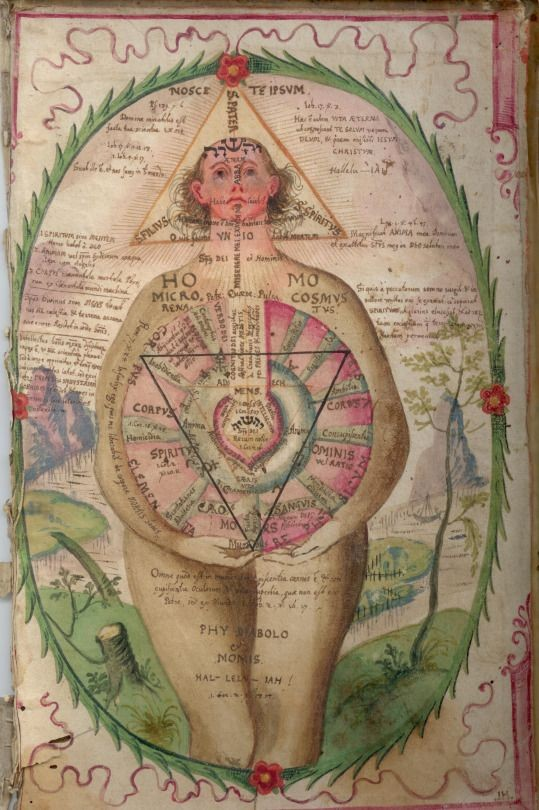
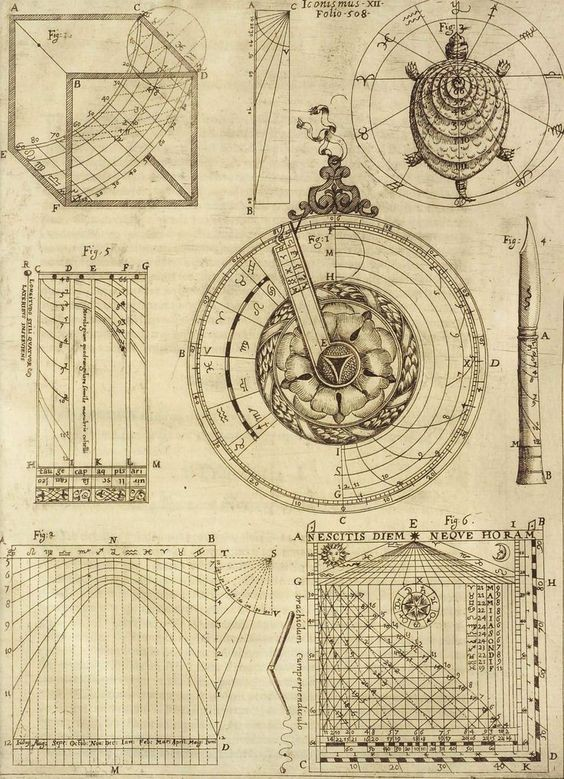
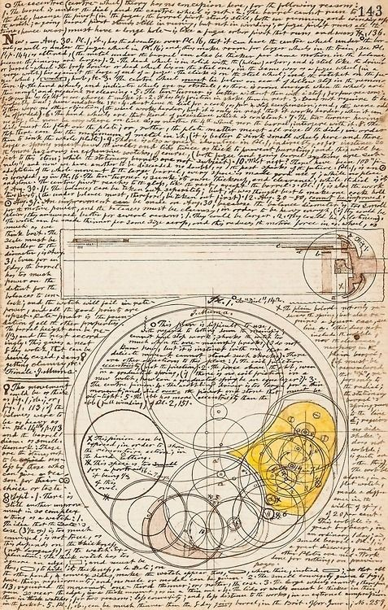
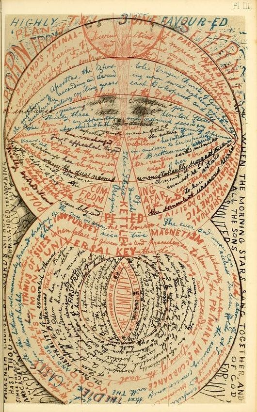
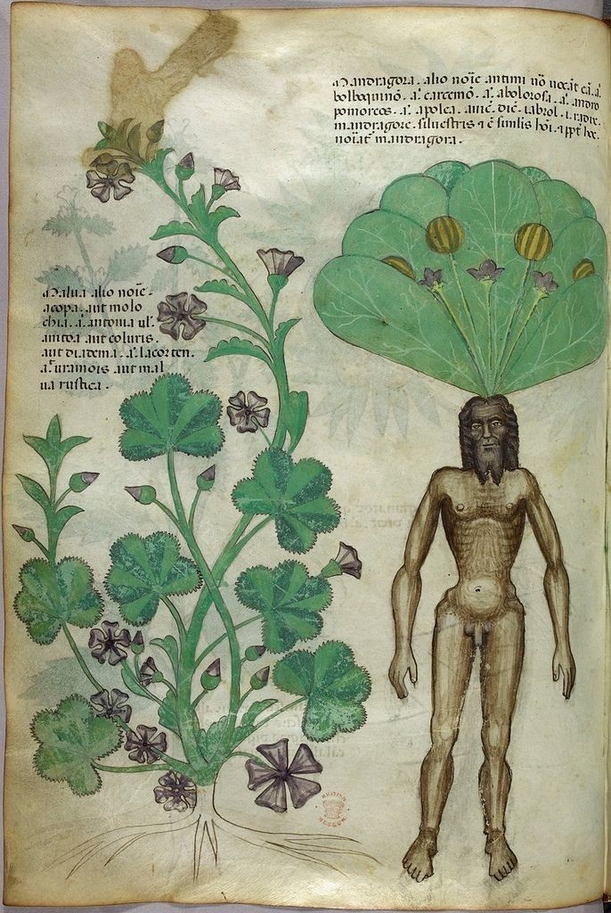
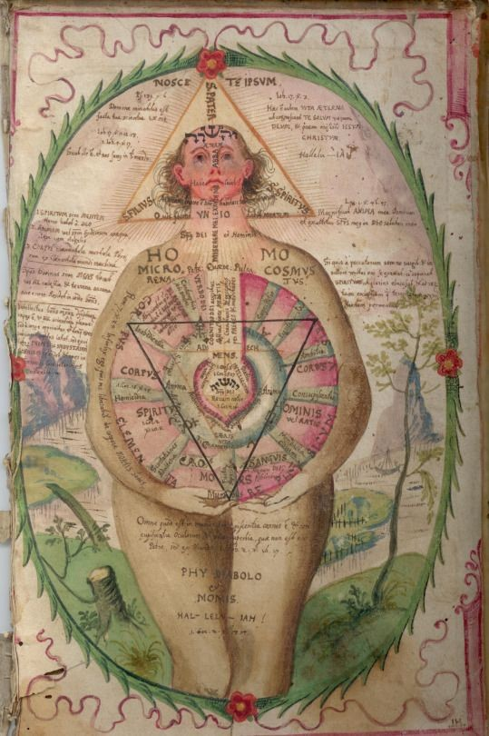
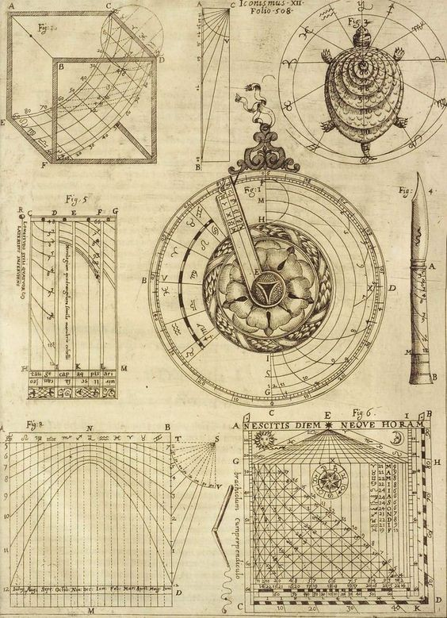
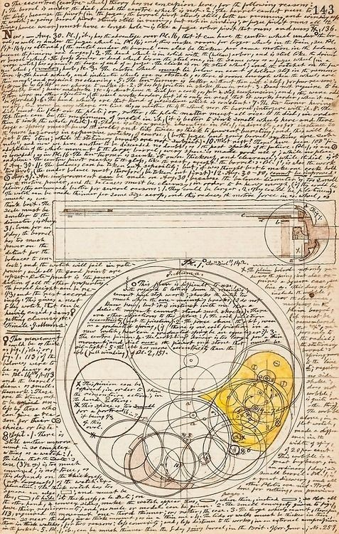
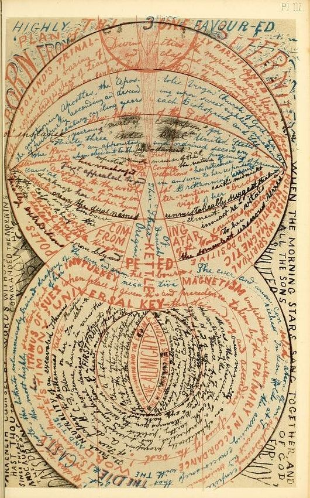
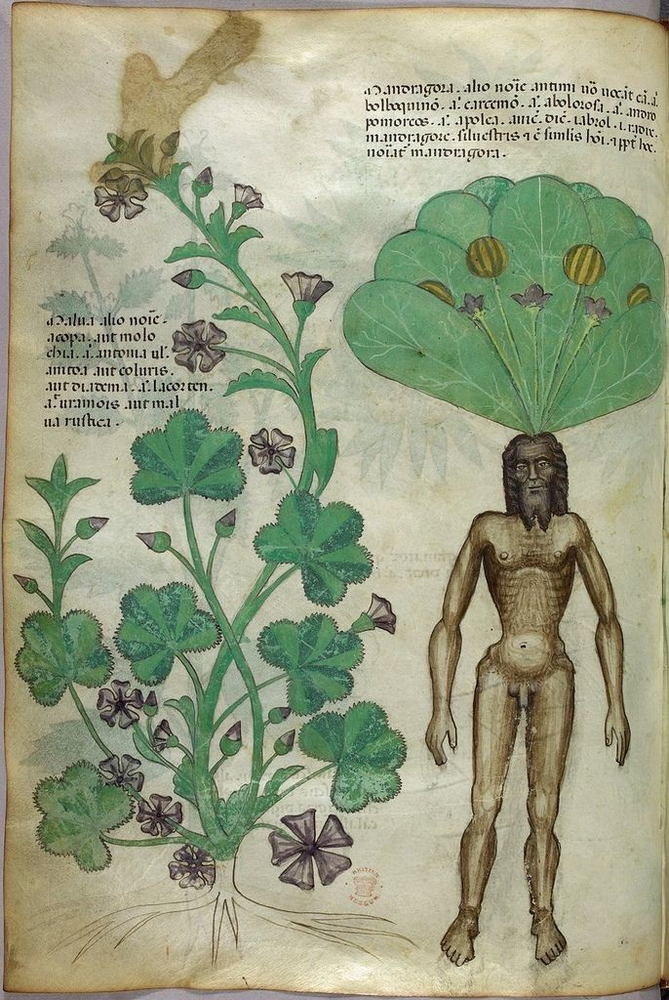

Voynich Manuscript
 









The Voynich Manuscript is one of the most perplexing and mysterious documents ever discovered. Named after Wilfrid Voynich, the Polish book dealer who acquired it in 1912, the manuscript is believed to date back to the 15th century. Its origin, authorship, and the meaning of its strange script and illustrations have puzzled historians, cryptographers, and linguists for centuries.
The Manuscript's Contents
The Voynich Manuscript is a 240-page book, written in an unknown script with numerous illustrations of plants, astronomical diagrams, and mysterious figures. The illustrations are artistically intricate and depict plants that do not correspond to any known species.
Unknown Script and Language
The most significant enigma of the Voynich Manuscript lies in its script, which has defied all attempts at deciphering. Despite extensive efforts by experts and cryptographers over the years, the language and meaning of the text remain a tantalizing mystery.
Theories of Origin
Numerous theories have been proposed regarding the origins of the Voynich Manuscript. Some suggest it was the work of an ingenious hoaxer, while others believe it could be a secret code or encrypted document. Some theories link it to alchemy, herbal medicine, or even extraterrestrial origins.
Scientific Investigations
The Voynich Manuscript has undergone extensive scientific analysis, including radiocarbon dating to authenticate its age. The results suggest that it dates back to the 15th century, but the mystery surrounding its contents and language remains unsolved.
Possible Authors and Owners
Several historical figures have been speculated as potential authors or owners of the manuscript, including Roger Bacon, John Dee, and Emperor Rudolph II. However, no definitive evidence links any particular person to the manuscript.
Controversy and Skepticism
The Voynich Manuscript has faced its share of skepticism and controversy. Some researchers argue that it may be a complex hoax or an elaborate piece of art with no hidden meaning. Nevertheless, the manuscript's allure and the intrigue surrounding it persist.
Modern Technology and Artificial Intelligence
In recent years, modern technology and artificial intelligence have been employed in attempts to crack the code of the Voynich Manuscript. While some promising results have been achieved, the mystery remains far from solved.
Preservation and Accessibility
The Voynich Manuscript is currently housed in the Beinecke Rare Book & Manuscript Library at Yale University, where it is carefully preserved and made accessible to researchers and the public.
Conclusion
The Voynich Manuscript continues to captivate the world with its secrets and enigmatic allure. Despite centuries of investigation, the true meaning of its script, the purpose of its illustrations, and the identity of its author remain elusive. As technology and research methods advance, the hope of unraveling the mysteries hidden within its pages persists, reminding us of the enduring fascination with the unknown and the endless quest for knowledge that drives humanity's exploration of the past and the universe.